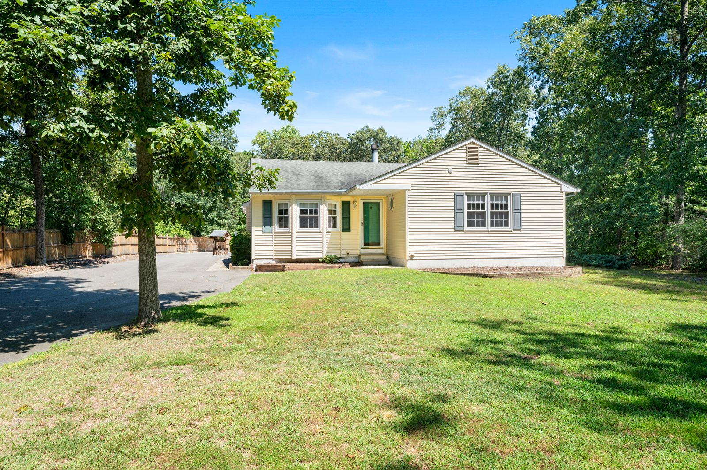
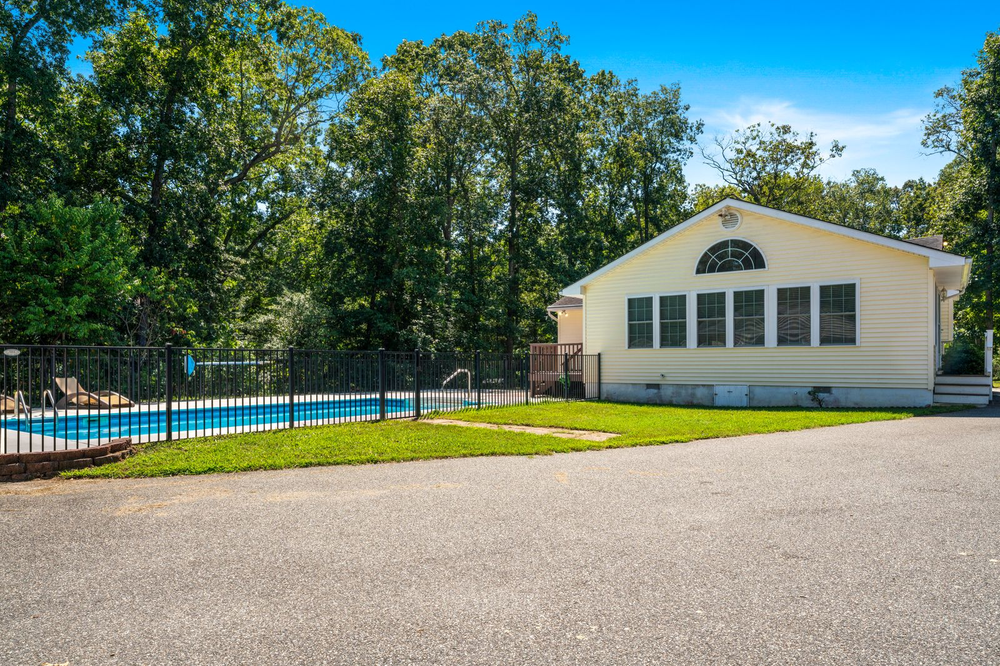
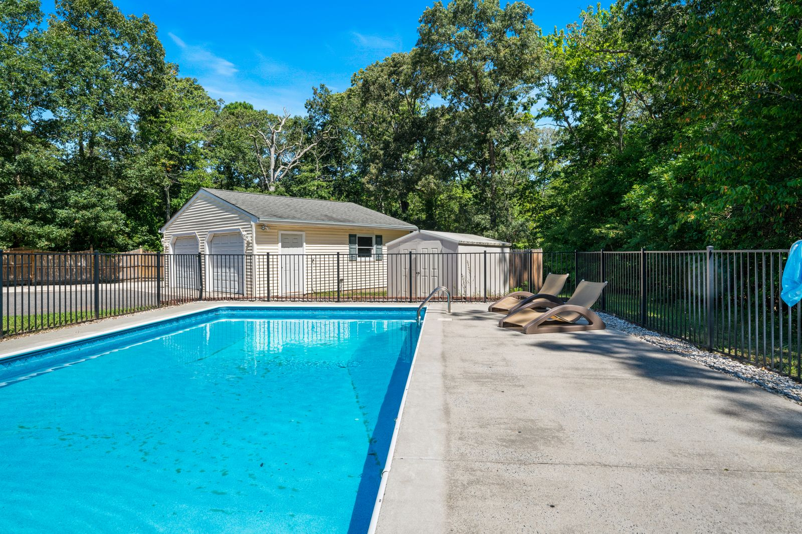
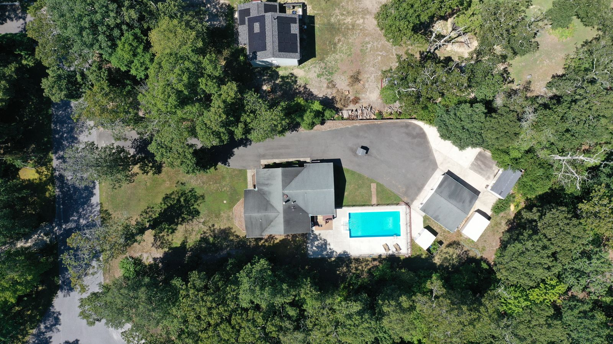
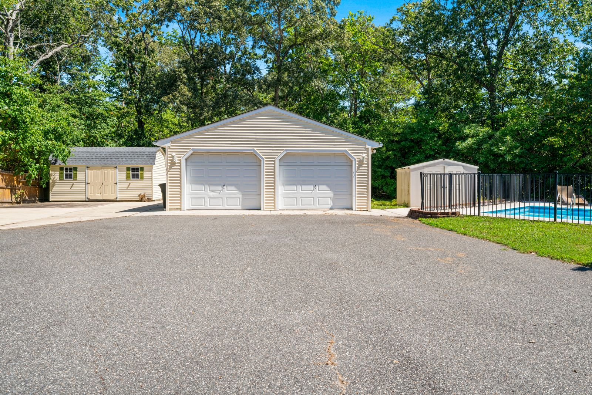
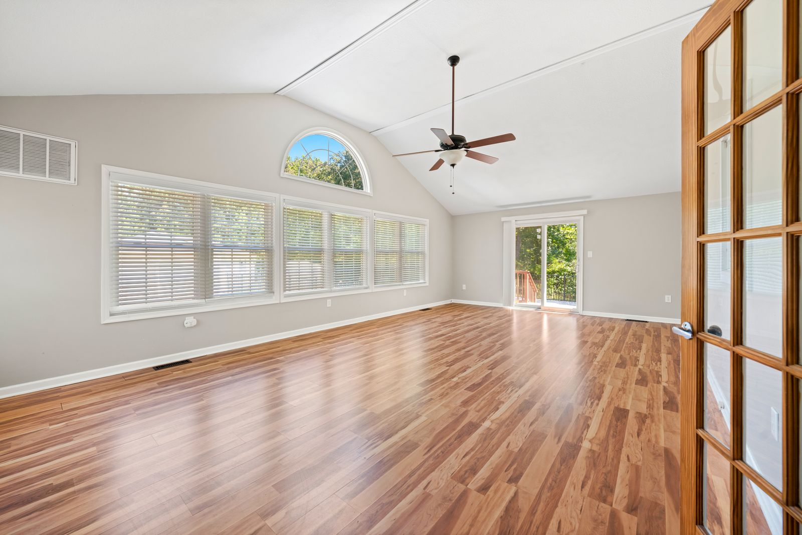
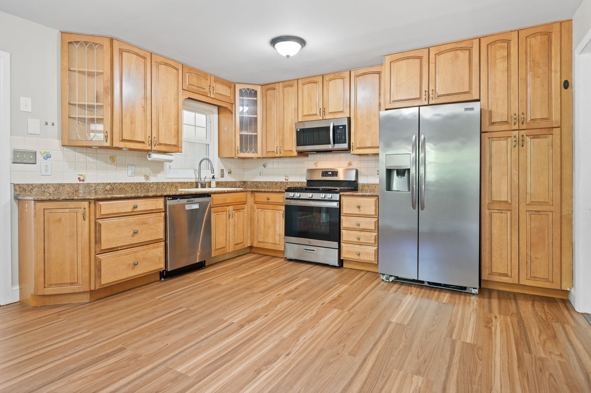
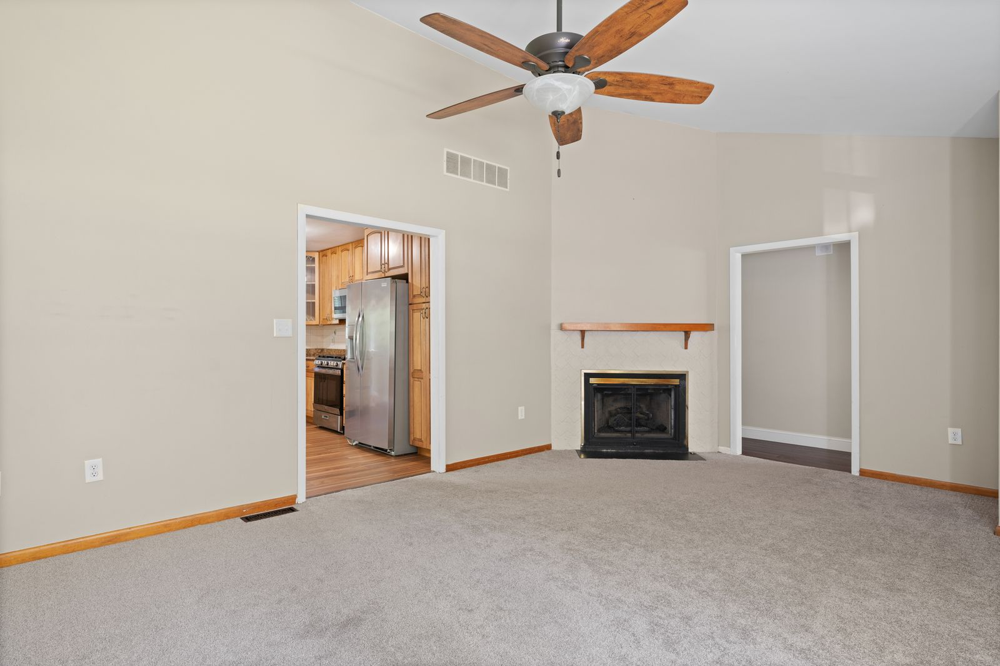
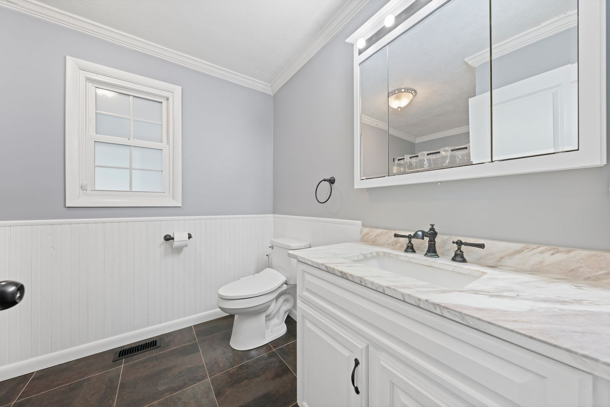
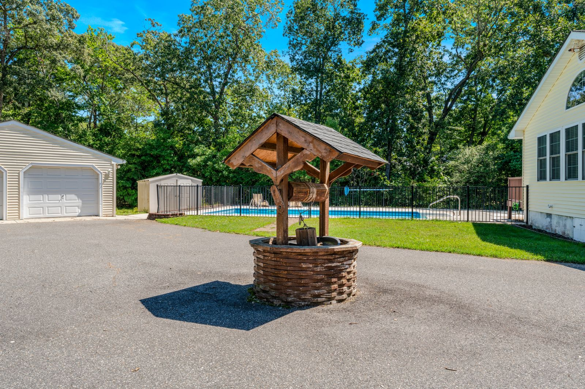

Real Estate Photography in Cape May Court House, NJ: 26 Lomurno Ln
About this Cape May Court House listing shoot
Listing Pixl provided professional real estate photography for this Cape May Court House, New Jersey property at 26 Lomurno Ln 08210. A Cape May Court House ranch with an inground pool, detached garage and a big wooded lot. The shoot was booked by Jason Ruffenach of eXp Realty to give the listing scroll-stopping photos for the MLS, Zillow, and social media.
26 Lomurno Ln is a ranch on a large lot in Cape May Court House with an inground pool, a detached two-car garage and plenty of mature trees. The shoot covered the bright great room, kitchen and living room inside, then moved outside for the pool area and a top-down drone view that shows the house, pool and garage together.




















What we photographed
- Front exterior on the wooded lot
- Fenced inground pool from two angles
- Great room with vaulted ceiling and arched window
- Kitchen, living room with fireplace and bathroom
- Top-down drone view of the home, pool and garage
Real estate photography services delivered
This Cape May Court House NJ shoot included HDR listing photography with professional editing and color correction, delivered next-day and sized ready for the MLS. Drone aerial photography showed the lot, the setting, and the surrounding Cape May Court House neighborhood — the views that make South Jersey listings stand out online.
Real estate photography in Cape May Court House, NJ
Cape May Court House is the county seat in Middle Township, offering more land and newer neighborhoods than the barrier islands while staying a short drive from the beaches. Larger lots, pools and townhome communities are common here, and drone views are the best way to show the space.
See packages, FAQs and every shoot in town on our Cape May Court House, NJ real estate photographer page.
More shoots near Cape May Court House
Lock In a Cape May Court House, NJ Real Estate Photographer
Selling in Cape May Court House or anywhere in Cape May County? Listing Pixl shoots across Cape May Court House, Swainton, Rio Grande, Wildwood, Stone Harbor, Dennisville, and surrounding South Jersey towns. Packages from $295. Call or text (609) 780-7027 or lock in your shoot online.